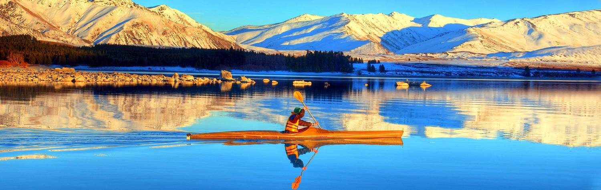

New Zealand offers a world of compelling contradictions. It brims with adventure yet the
experience is often defined by serenity. Endlessly incomprehensible landscapes are matched by
a friendly familiarity at every destination. Unique geological features test definitions of
natural beauty, yet the journey through Middle Earth is a smooth one. It’s no wonder that the
country is a favorite of Hollywood movie directors; there’s no need for enhanced graphics when
every backdrop bursts with drama and vibrancy. Fjords slice through the South, jagged snowy
peaks gaze upon calm alpine lakes, geothermal jets burst through Jurassic rock, while forest
and beach merge before your eyes. And these aren’t grasped glimpses. Ethereal landscapes greet
you from the plane window, tower over your boutique hotel, and accompany every intrepid turn.
Yet for all New Zealand’s surreal splendor, it’s the accessibility and ease of travel that
impresses most. The country’s compact size is combined with an exemplary transport infrastructure,
allowing those with limited time to jump deep into the experience. There’s an inherent capacity
to excel and impress, reflected in the sublime array of accommodation, food, and tours. Visitors
with more time can veer and venture, sweeping across the country to remote destinations that
scream of a lost world. No day is ever lost here. Each journey is an integral part of the
experience, whether it’s meandering through volcanic leftovers, zigzagging into jaw-dropping
mountains, or rolling past fairytale farmland. Look left, look right, turn around, and the country
continues to evoke superlatives. You may have seen Lord of the Rings on the big screen, but that
doesn't come close to what New Zealand really looks like.
The country predominantly consists of two geologically distinct islands. The North is embodied
by enchantment and tranquility, every vista dreamy on the eye as it effortlessly rolls and curves.
The South Island comes from a different surrealist collection, jagged lines and dramatic
mountains providing a theatrical stage for your adventure. Central to both are soothing picturesque
lakes, calming expanses of water from which your photos are framed. And don’t forget the
New Zealanders themselves; indigenous Maoris offer traditional tribal welcomes, outdoor enthusiasts
guide you through forests, and in a land of such allure you can expect everyone to have a smile
on their face. In this land of contradictions there’s no need to follow a single paradigm.
Adrenalin, wanderlust, nature mixed with culture, movie indulgence meets fresh perspectives,
settling into a tranquil rhythm; come to New Zealand and simultaneously have all kinds of different
vacations. Her are just a few of the highlights from the unforgettable New Zealand get-away
that awaits you:
1.Adventure in the Wilderness: New Zealand’s unforgettable landscapes are not just
pleasing on the eye, they’re epic wildernesses that demand exploration. This is a land of outdoor
adventure and it rewards beginners and professionals alike; kayak across lakes to uninhabited
hot springs, mountain bike along breathtaking forest trails, and enjoy a dazzling choice of hiking
routes. In many places you’ll be doing it all in one day.
2.Journeying from Sound to Sea:Most journeys have you glued to the window, eyes lost
in a haze as the terrain twists beyond the imagination. The feeling of incredulity is symbolized
by Milford Sound, a narrow fjord surrounded by mountainous walls and thunderous waterfalls.
Take a boat cruise across the dolphin inhabited water, winding through astonishing panoramas
to reach the Tasman Sea.
3.Fantasy and Fiction Come to Life:It only takes one glance at New Zealand to confirm
that the country really does resemble Middle Earth. Peter Jackson used hundreds of locations in
both the South and North Islands, and he’s just one of many movie directors who keep returning
to this visually fictional world. Tailored tours take you closer, revealing countless spots from
The Hobbit and Lord of the Rings, plus a dazzling array of locations that have graced many Hollywood epics.
